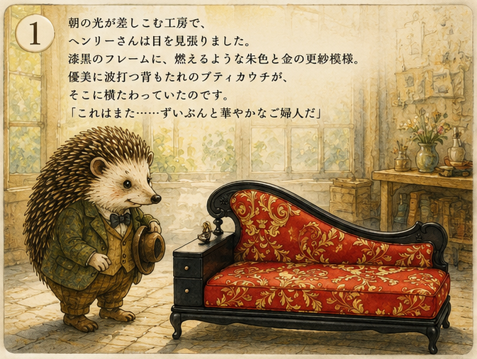
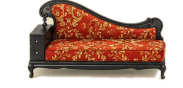
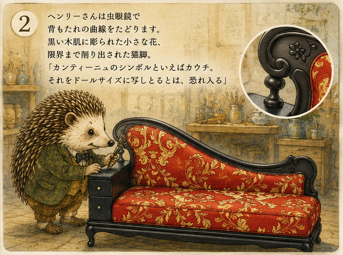
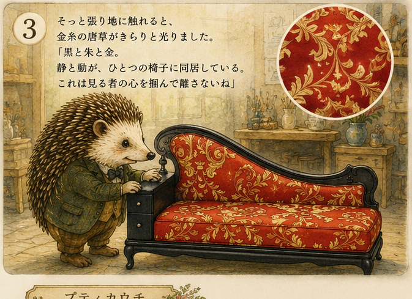
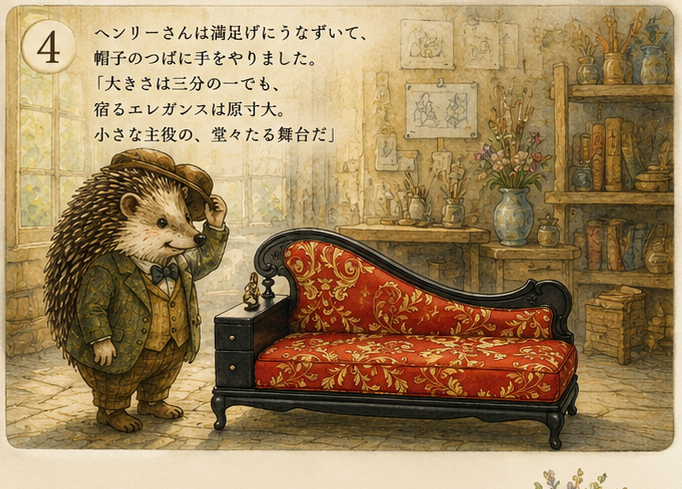
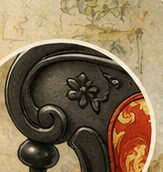
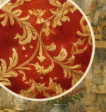
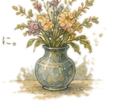

1

Awakening · 朝の出会い
朝の光が差し込む工房で、ヘンリーさんは目を覚ましました。漆塗りのフレームに、燃えるような朱色と金の更紗模様。優美に波打つ背もたれのプティカウチに、すっかり惚れたらしい。
これはまた……ずいぶんと華やかなご婦人だ
A Tiny Antique Tale
小さな骨董と、世界でいちばん優しい鑑定家の物語。
— Elegance, however small, is never diminished. —

Prologue
朝の光が差し込む工房に、
ひとりの鑑定家がいます。
名前は ヘンリー。
小さな骨董の声に、耳をすませる
ハリネズミです。
手のひらにのるほどの椅子、ドールのための小さな家具。 ヘンリーさんは虫眼鏡を片手に、その一品に宿る職人の手仕事と、 縮まないエレガンスを、今日もそっと見つけ出します。
Episode One
Petite Couch · La Petite Causeuse

Awakening · 朝の出会い
朝の光が差し込む工房で、ヘンリーさんは目を覚ましました。漆塗りのフレームに、燃えるような朱色と金の更紗模様。優美に波打つ背もたれのプティカウチに、すっかり惚れたらしい。
これはまた……ずいぶんと華やかなご婦人だ

Inspection · 細密の検分
ヘンリーさんは虫眼鏡で背もたれの曲線をたどります。黒い木肌に彫られた小さな花、限界まで削り出された猫脚。
カンティーニュのシンボルといえばカウチ。それをドールサイズに写したとなると、恐れ入る

The Fabric · 張り地の煌めき
そっと張り地に触れると、金の唐草がきらりと光りました。黒と朱と金、静と動が、ひとつの椅子に同居している――
これは見る者の心を掴んで離さないね

The Verdict · 鑑定の結び
ヘンリーさんは満足げにうなずいて、帽子のつばに手をやりました。大きさは三分の一でも、宿るエレガンスは縮まない。
小さな主役の、堂々たる舞台だ
In the Details

Carved Bloom
黒い木肌に咲く、米粒ほどの花。限界まで削り出された猫脚の曲線は、原寸の品とまったく同じ手数で仕上げられています。

Golden Arabesque
燃えるような朱の生地に、金糸の唐草が踊ります。光の角度でひそやかに煌めく、見る者の心を掴んで離さない一面です。
Henry's Collection
The Petite Couch
優美に波打つフレーム、朱色に金の更紗模様。猫脚のやわらかな曲線、彫刻の花、小さな引き出しまで――どこをとっても、職人の手仕事が息づいています。小さくても、カンティーニュの誇りはそのままに。大切なドールのための、特別な場所。
つ づ く
ヘンリーさんの工房には、まだ声をかけてほしい小さな骨董が、いくつも眠っています。次はどんな一品が、朝の光に照らされるのでしょう。
